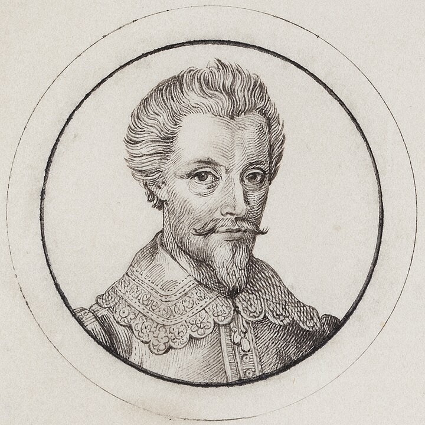
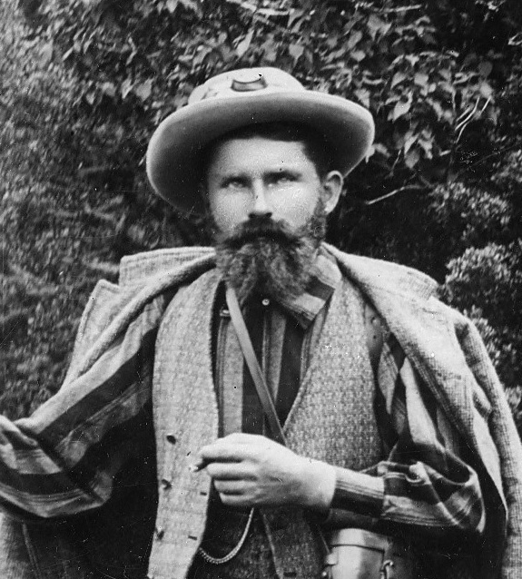
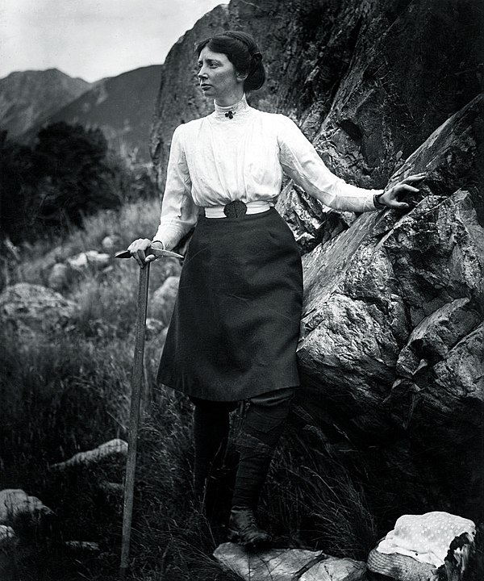
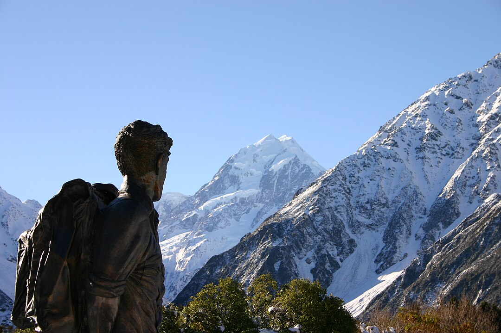

Select a marker or menu option to learn more about this area of Mount Cook.
Aoraki was possibly sighted by Abel Tasman and his crew, marking one of the earliest European encounters.
Captain John Lort Stokes of HMS Acheron named the mountain “Mount Cook.”
An early attempt by Rev. William S. Green, Emil Boss, and Ulrich Kaufmann came within a few feet of the summit.

Tom Fyfe, Jack Clarke, and George Graham reached the summit via the Hooker Valley and north ridge.
Matthias Zurbriggen made the second ascent from the Tasman Glacier side—the first solo effort.
Freda Du Faur became the first woman to reach the summit.
Sir Edmund Hillary achieved his first ascent of Mount Cook and pioneered a new route on the South Ridge.
An avalanche caused 10 metres to be lost off the top; the height was reduced by another 30 m to 3,724 m.
The Ngāi Tahu Claims Settlement Act officially recognised the original name, renaming the mountain Aoraki / Mount Cook.